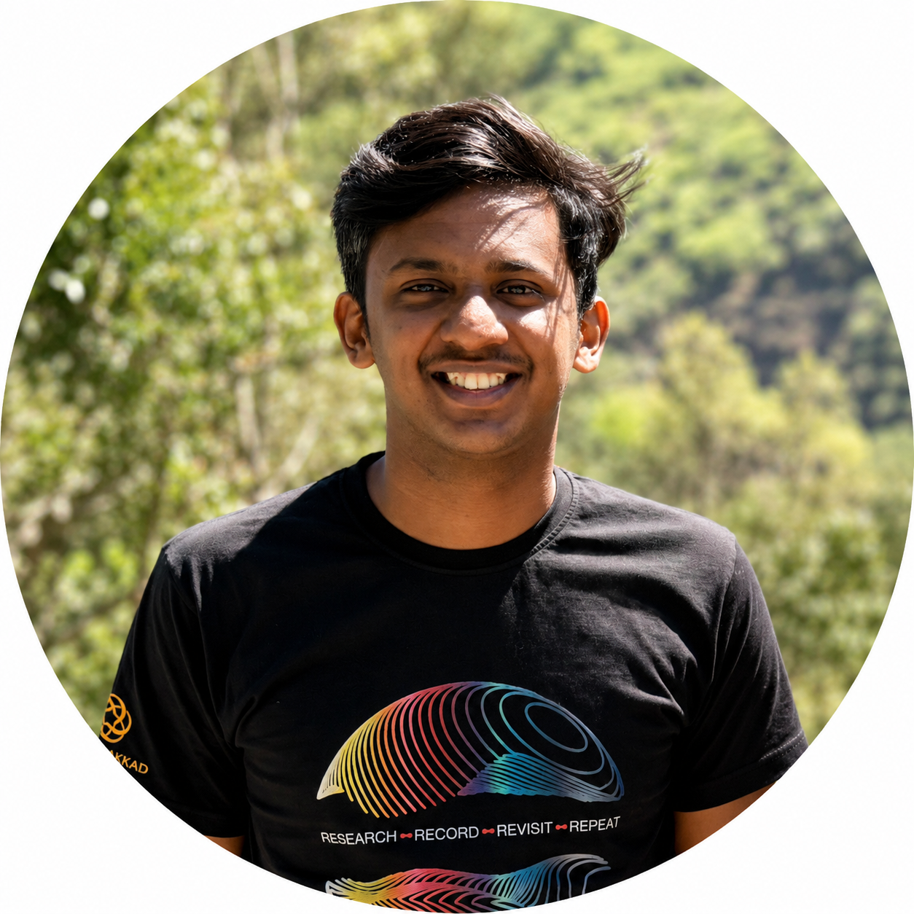

Harikrishnan S
Electrical Engineer | Electric Drives | Control Systems | Power Electronics
Researcher at IIT Palakkad working in motor drives, power electronics, digital control, embedded systems and power converter design. Specializing in encordless control of drive systems
About
I am a Research Scholar in Power Electronics and Drives , currently working on encoderless speed control of electric drives at IIT Palakkad. My work spans the complete process of developing practical drive systems—from modeling and control design to embedded implementation, hardware development, and experimental validation. I am more interested in hardware development from basics, starting with theory to PCB design to validation.
My primary interest lies in developing real-time control and speed estimation techniques that can be implemented reliably on actual hardware. I enjoy working at the intersection of theory and experimentation, where control algorithms developed through mathematical analysis and simulation are eventually tested and refined on physical systems.
Beyond power electronics, I have a strong interest in software and application development. I enjoy developing software tools that assist with engineering analysis, experimental data acquisition, visualization, and research workflows. My goal is to bring together hardware, control, and software to develop practical and effective engineering solutions.
Research Interests
- Power Electronics
- Motor Drives
- Digital Control
- Power Converter Modeling
- Embedded Control Systems
- DC-DC Converters
- IPM Design
- Control of Electrical Machines
Skills
Programming
Python · C · C++ · MATLAB · JAVA · HTML
Simulation
MATLAB/Simulink · LTspice · PLECS · Qspice · LTspice
Embedded Systems
C2000 ware · Arduino · Renesas
Misc.
PCB Design · Teaching · App Development
Publications
A Practical Design Methodology for Cascaded PI Control of Electric Drives Under Saturation Constraints
Harikrishnan S and Arun Rahul S
IECON 2026, Qatar · Accepted
Analysis of Modified Single Loop PI Control Framework for Electric Drive Applications
Harikrishnan S and Arun Rahul S
PEDES 2026, India · Accepted
A Generic Online Resistance Adaptation Scheme for Speed Observers in Encoderless DC Motor Drives
Harikrishnan S and Arun Rahul S
PEDES 2026, India · Accepted
Implementation-Oriented Evaluation of PMDC Drive Sensorless Speed Control Techniques
Hariharan D, Radhika Gopal, Harikrishnan S and Arun Rahul S
PEDES 2026, India · Accepted
Application and Comparative Study of the αβ Filter in Model-Based Speed Estimation and Sensorless Control of PMSMs
Harikrishnan S and Arun Rahul S
12th National Power Electronics Conference (NPEC), 2025, India · Best Paper Award
DOI →Closed Loop Power Hardware in the Loop Back EMF and Current Emulation of a PMDC Machine
Arun Rahul S and Harikrishnan S
IEEE Energy Conversion Congress & Exposition Asia (ECCE-Asia), 2025, India
DOI →State Feedback Speed Control of PMSM Using Multithreaded Controller
Harikrishnan S and Arun Rahul S
IEEE International Conference on Power Electronics, Drives and Energy Systems (PEDES), 2024, India
DOI →Speed Sensorless Power Hardware In the Loop Emulation of PMDC Machine with Fuzzy Based Observer
Arun Rahul S and Harikrishnan S
IEEE International Conference on Power Electronics, Drives and Energy Systems (PEDES), 2024, India
DOI →Multithreaded State Feedback Control with Speed Estimation for Permanent Magnet DC Motor Speed Control
Harikrishnan S and Arun Rahul S
IEEE Recent Advances in Intelligent Computational Systems (RAICS), 2024, India
DOI →Energy Efficiency-Based Multithreaded State Feedback Speed Control of PMDC Motors
Harikrishnan S and Arun Rahul S
IAES 2024, India
Human Detection System for Rescue Operations
Sikhin VC and Harikrishnan S
International Conference on Microelectronics, Signals and Systems (ICMSS'19), India
DOI →Education
Ph.D. in Electrical Engineering
Indian Institute of Technology (IIT), Palakkad
CGPA: 10/10
Guide: Dr. Arun Rahul S, Associate Professor
M.Tech in Power Electronics and Power Systems
Indian Institute of Technology (IIT), Palakkad
CGPA: 9.84/10
B.Tech in Electrical and Electronics Engineering
Thangal Kunju Musaliar College of Engineering (TKMCE), Kollam
Under APJ Abdul Kalam Technological University, Kerala
CGPA: 9.5/10
Class XII
Trinity Lyceum, Kollam (ISC)
Aggregate: 97.25%
Class X
Trinity Lyceum, Kollam (ICSE)
Aggregate: 94%
Experience
Teaching Assistant
Indian Institute of Technology (IIT), Palakkad · Kerala, India
Assisted in undergraduate and postgraduate courses including DC-DC Power Converters Analysis and Simulation, Power Converter Design Lab, and Electrical Machines. Responsibilities included preparation of tutorials and laboratory materials, simulation experiment development, laboratory demonstrations, assignment evaluation, and conducting viva voce examinations.
Workshop Instructor
Various Academic and Professional Workshops · Kerala, India
Master Trainer for the Solar Ambassador Workshop conducted by the Energy Swaraj Foundation at IIT Palakkad. Also conducted hands-on workshops on App Development, Circuit Design, and Arduino under the EEE Association and IEI, TKMCE.
Project Assistant
Indian Institute of Technology (IIT), Palakkad · Kerala, India
Assisted Dr. Arun Rahul S in the development of an encoderless speed control scheme for PMSM centrifugal pumps for CRI Pumps. The proposed algorithm was implemented on a Renesas RX23T microcontroller and successfully field-tested on 3 HP and 5 HP centrifugal pumps.
Tutor
Info On Learning Solutions · Kerala, India
Managed tuition sessions for students across various subjects in the Electrical and Electronics domain, providing clear instruction and supporting students in developing a strong understanding of fundamental and advanced concepts.
Contact
You can reach me at